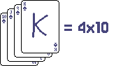
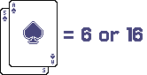

Blackjack starts by the players placing bets, after bets are placed the dealer start dealing cards to the players and himself. Everyone gets 2 cards and they are placed faceup, execpt for the seccond dealer's card.
In blackjack you play aganist the dealer / the casino and not the other players, the goal of the game is to get a hand (the cards you have) to be worth 21, But be carefull! If your cards total over 21 you "bust" meaning you lose automatically.
In blackjack all cards use their number value shown on the card. The cards without numbers (jack, queen, king) all count as 10. 
The ace is a little more special as it's has the vaule of both 1 or 11. A hand with ace and
five would
be a "soft" 16
(soft means that the ace is counted as 11 and can be hit without a problem since it
can
also
be 1 if needed).

Then one player at the time can decide what they want to do on their turn. there are 4 possible actions in blackjack you can do on your turn, "hit", "stand", "dobble" and "split"
If the player "hit" they will be delt one more card, then they can decide their action again
If the player "stands" they will end their turn.
If the player dobbles, they get one more card just like hit but they also dobble their original bet. but after they have dobbled their turn ends. meaning you cant hit anymore after a dobble.
Split the player can only do this if they have to identical cards in value. When splitting the players hand is divided into two SEPRART hands, on the new hand the player places a equal bet to the first hand. The hands gets delt one card each. The hands are player invidually where you cando your actions.
Blackjack is the best hand a player can get and its when a player gets 21 on their fist two cards. Blackjack grants a win over a normal 21 but pushes against dealer having blackjack. The payout for winning with a blackjack is 1 and a half times more than u bet or (3 to 2)